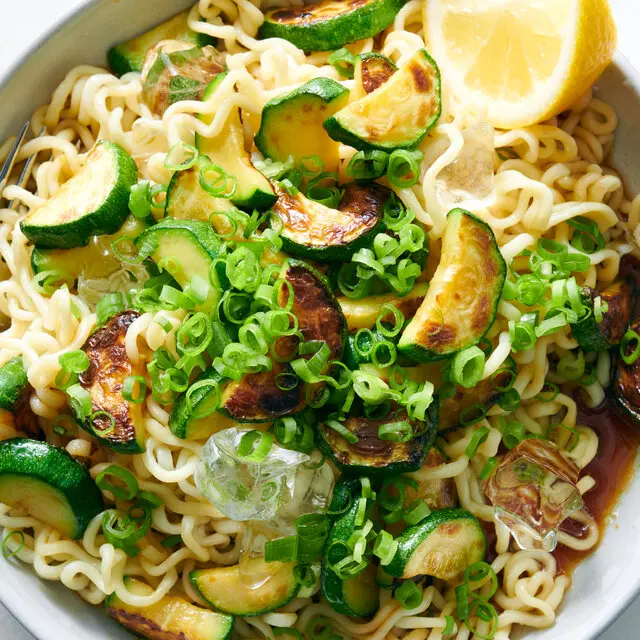
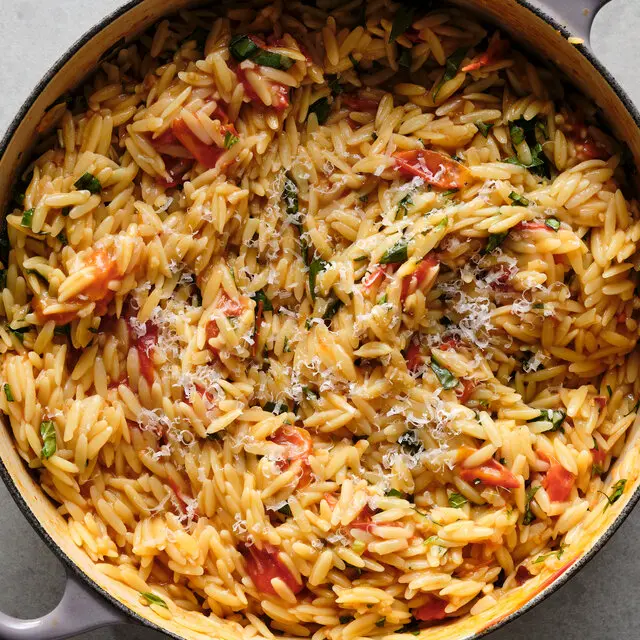
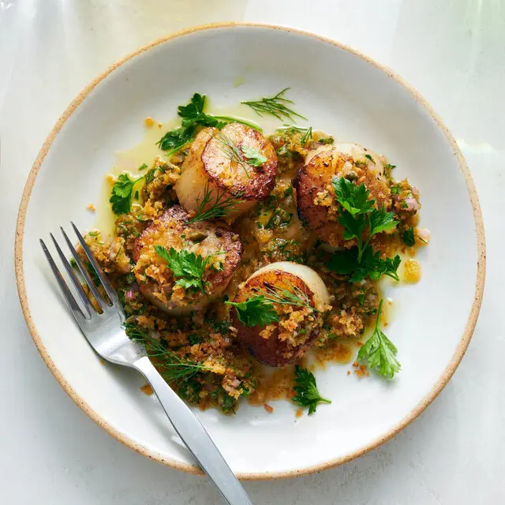

Recipe Of The Day
Meatballs With Any Meat
By Nguyen Duc Hung
Making great meatballs is all about memorizing a basic ratio that you can adjust to suit your taste.
Meatballs With Any Meat
By Nguyen Duc Hung
Making great meatballs is all about memorizing a basic ratio that you can adjust to suit your taste.

Easy Weeknight Dinners
Make these recipes when you need a fast, flavorful meal.

Slow Cooker Gochujang Chicken and Tomatoes
Eric Kim
Time take: 6 hours

Burst Cherry Tomato Orzotto
Trung Duc
Time take: 50 minutes
Cold Noodles With Zucchini
Duc Hung
Time take: 15 minutes

Scallops With Bread-Crumb Salsa Verde
Gordon Ramsey
Time take: 30 minutes